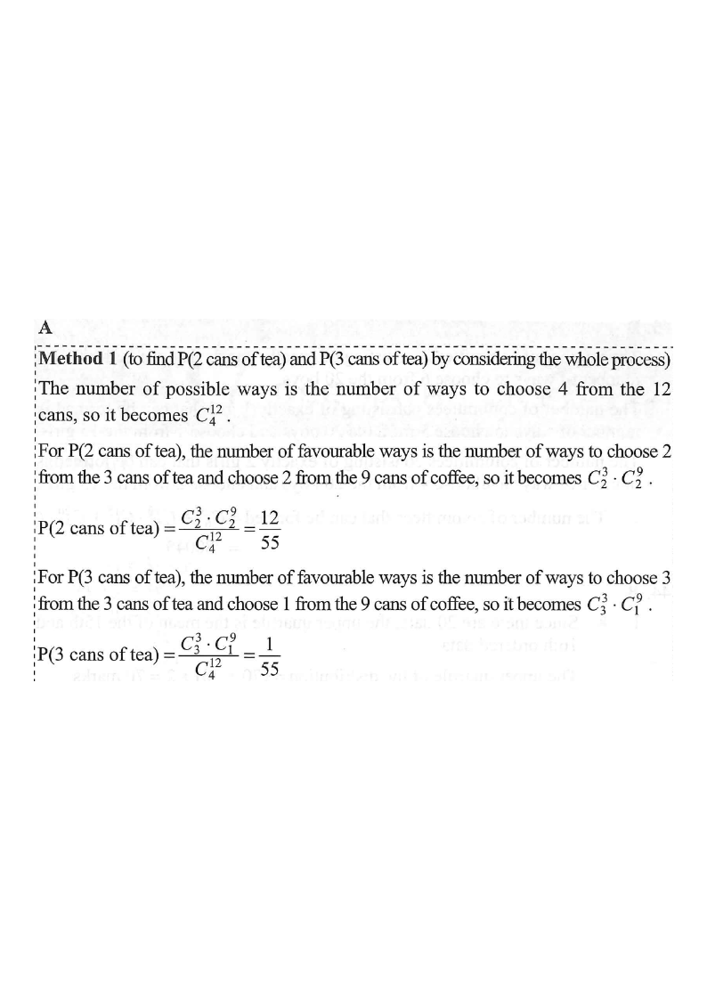

Step 1: 9 coffee cans and 3 tea cans → total 12 cans. Choose 4.
2016 P2 Q42
There are 9 cans of coffee and 3 cans of tea in a box.
If 4 cans are randomly chosen from the box, find the probability that at least 2 cans of tea are chosen.
A. $\dfrac{13}{55}$
B. $\dfrac{21}{55}$
C. $\dfrac{34}{55}$
D. $\dfrac{42}{55}$

Figure (original exam diagram)
Step-by-step solution
1Set up the total number of ways.
Total cans $=9+3=12$. Choose $4$ cans out of $12$:
$$C_4^{12}=\frac{12!}{4!\,8!}=495$$
Hint: the sample space is "choose any 4 from 12".
Combination\({}^{n}C_{r}=\dfrac{n!}{r!\,(n-r)!}\)Choosing \(4\) cans from \(12\) gives \({}^{12}C_{4}=495\) equally likely selections.
2Case A — exactly 2 cans of tea.
Choose $2$ tea from $3$ and $2$ coffee from $9$:
$$C_2^{3}\cdot C_2^{9}=3\times 36=108$$
$$P(2\text{ tea})=\frac{108}{495}=\frac{12}{55}$$
Hint: split into "tea chosen" and "coffee chosen" groups.
Multiplication Rule of Counting\({}^{n}C_{r}\cdot{}^{m}C_{s}\)Choosing \(2\) tea from \(3\) and \(2\) coffee from \(9\) gives \({}^{3}C_{2}\cdot{}^{9}C_{2}=3\times36=108\) ways.
3Case B — exactly 3 cans of tea.
Choose $3$ tea from $3$ and $1$ coffee from $9$:
$$C_3^{3}\cdot C_1^{9}=1\times 9=9$$
$$P(3\text{ tea})=\frac{9}{495}=\frac{1}{55}$$
Hint: "at least 2" means 2 or 3 tea; 4 tea is impossible (only 3 tea cans).
Hint: the two cases cannot occur together, so add the probabilities.
Addition Rule for Mutually Exclusive Events\(P(A\cup B)=P(A)+P(B)\)“Exactly 2 tea” and “exactly 3 tea” cannot happen together, so their probabilities are added.
Answer: A $\dfrac{13}{55}$
PRACTICESimilar question — try it yourself
Question. There are \(7\) cans of coffee and \(4\) cans of tea in a box. If \(3\) cans are randomly chosen from the box, find the probability that at least \(2\) cans of tea are chosen. A. \(\dfrac{46}{165}\) B. \(\dfrac{42}{165}\) C. \(\dfrac{4}{165}\) D. \(\dfrac{52}{165}\) (1 mark)
Show the worked solution
Step 1. Total \(=7+4=11\) cans, and \({}^{11}C_{3}=165\) ways of choosing \(3\).